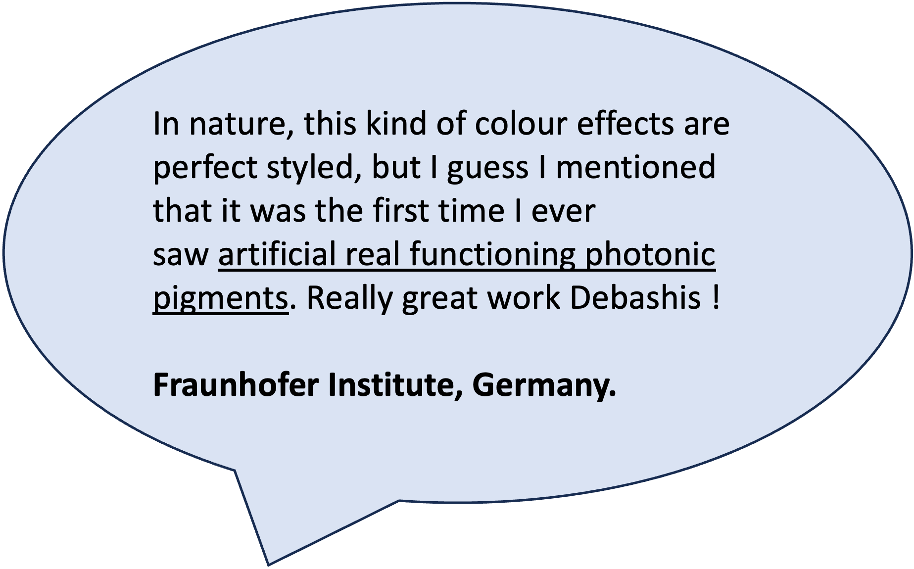
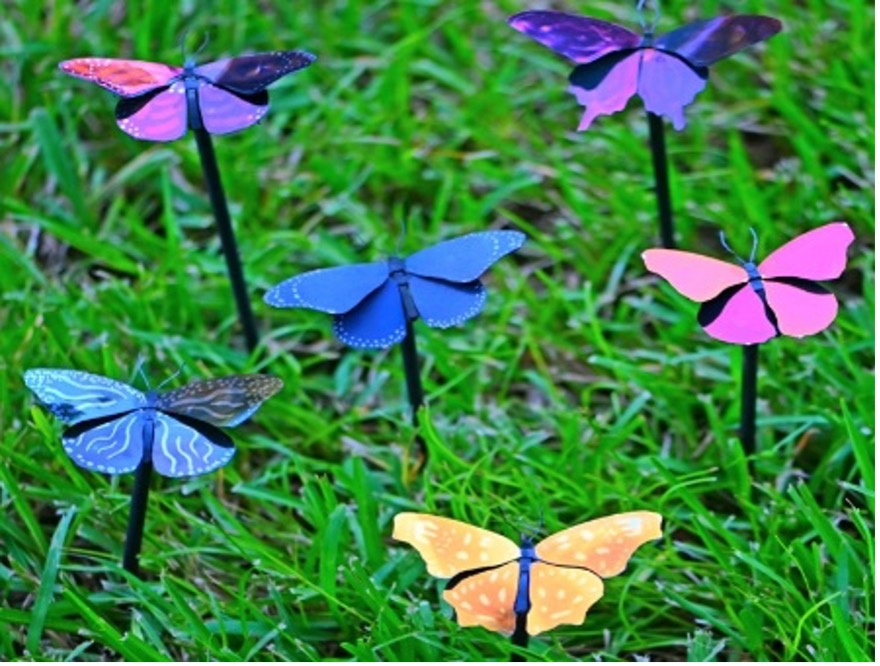
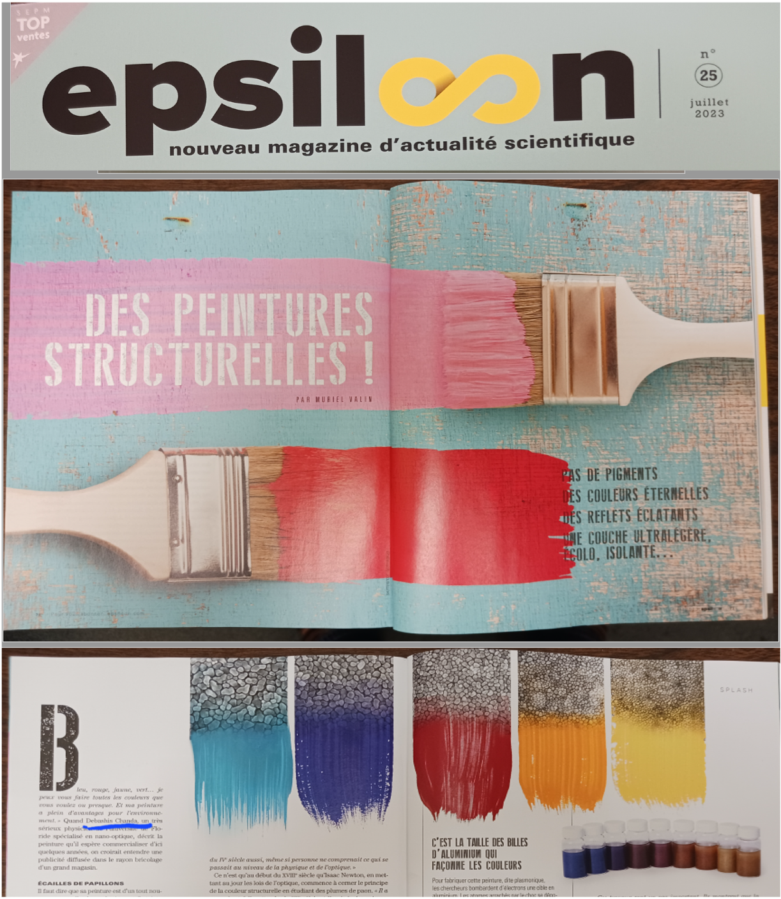
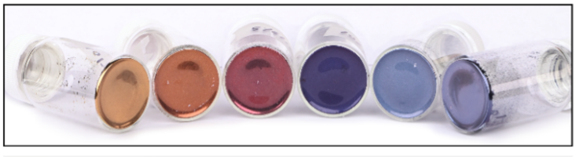

Validated by Science, Recognized Worldwide
e-skin Displays' photonic pigment research has been published in peer-reviewed journals and featured by leading science and technology media globally.

"Ultralight plasmonic structural color paint" — peer-reviewed research demonstrating the world's lightest structural color coating.
Science Advances · March 5, 2023"Butterflies Inspire Paint Without Pigments" — covering e-skin's breakthrough nature-inspired structural color technology.
Forbes · March 21, 2023"This Is the Lightest Paint in the World" — feature coverage of e-skin's 100-nanometer photonic coating and its implications for aerospace and design.
WIRED · March 22, 2023Featured in NSF News highlighting the scientific significance of structural color photonic pigments developed at e-skin Displays.
National Science Foundation · 2023Institutional Recognition
From Stuttgart to Paris to Cambridge




e-skin pigment samples are displayed at the Harvard Art Museum, referenced at the Louvre Museum in Paris, preserved in the Forbes Pigment Collection, and endorsed by the Fraunhofer Institute in Stuttgart, Germany.